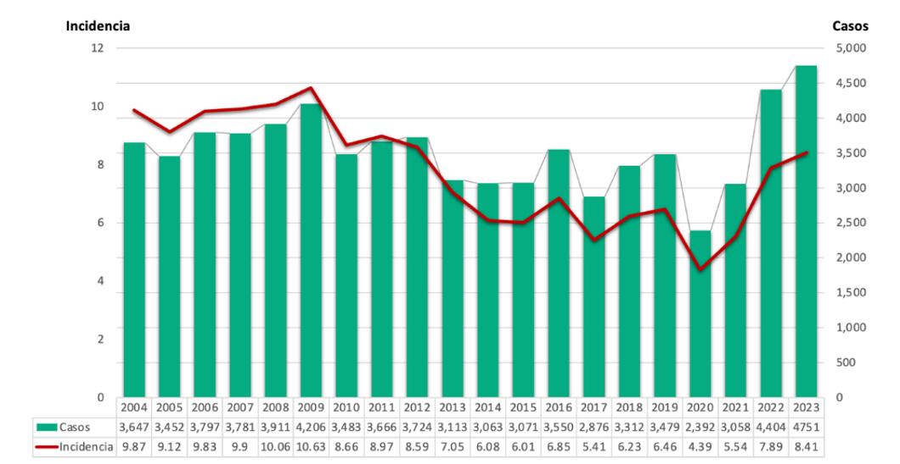
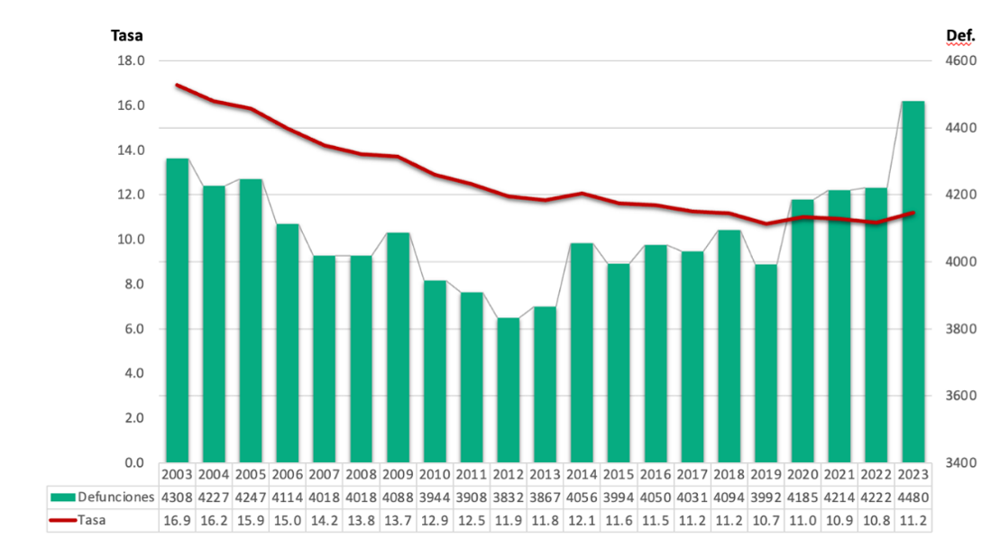

1. Epidemiología del Cáncer de Cuello Uterino
El CCU es una de las principales causas de muerte en mujeres en el mundo y en México, sin embargo, es una enfermedad prevenible y curable si se detecta a tiempo.
(Da clic en las gráficas para una mejor visualización)
Tasa de Incidencia* y número de casos nuevos** de cáncer de cuello del útero en mujeres. México, 2003-2023

Tasa de mortalidad* y defunciones por cáncer de cuello del útero en mujeres de 25 años de edad y más. México, 2003-2023
